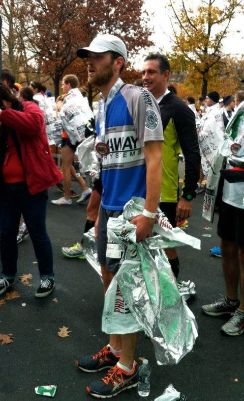

|

|
When I graduated from college, I had a problem. For the first time in my memory I didn't have a coach telling me where and when to exercise. I had always thought I was an athlete, but without that organization I quickly lost all my fitness and gained 40 pounds. Then, in winter of 2011, my girlfriend told me her company would be putting a team together for the 2012 New York City Triathlon, through Team in Training. I waffled for a while, using work as an excuse. I was a landscaper and I feared I wouldn't have the energy to do both In reality, however, I was worried I couldn't do it. I had never run farther than a 10K.
I did do it, however, and it was one of the most rewarding experiences of my life. I got into great shape, made some of my closest friends in New York and most of all found out how exhilarating it was to do something for a cause outside myself. Since that first triathlon last July, I've run two marathons and one half-marathon, as well as one other tri and several smaller road and bike races. My girlfriend said I'd get hooked, and she was right. This summer, while training with you, I'll be working toward running a half-ironman at Rev3 Cedar Point, as well as a 25K trail race and a fall marathon. I truly love long distance races.
I can't wait to see where this season takes us. If my past experience is any indication, I'll make some great friends and have one of the most rewarding experiences of my life.
It's going to be a good summer.
Email Charlie
|